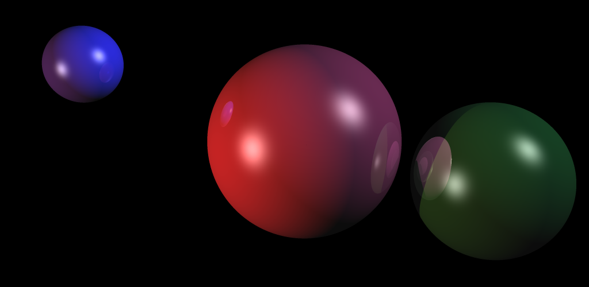

These is the course guide for a workshop I'm holding at Bradfield School of Computer Science. In the two-day workshop, I go through the fundamentals of 3D graphics, with an emphasis on foundational knowledge and hands-on experimentation. The workshop also lets me answer questions in person and help move students along the coursework in a timely fashion, but even without my presence, the material should be useful to a wider audience.
The workshop is laid out a series of lessons, each with a corresponding project. Students learn one foundational concept in each lesson, then implement that concept in their very own 3D renderer.
The full source for multiple implementations of the renderer is available, with one commit per lesson.. Students can follow along with an implementation, as each project is completed in its own commit. Furthermore, students can build off an existing base by using the tagged commits that represent the state of the project just prior to beginning a new project.
This way, if a student gets stuck on one lesson, they can experiment with another lesson by starting at a partial implementation of the renderer ready to go. This is especially useful in a live workshop, preventing students from falling behind. Interested learners are highly encouraged to do their own implementations from scratch, however.
The implementations are: